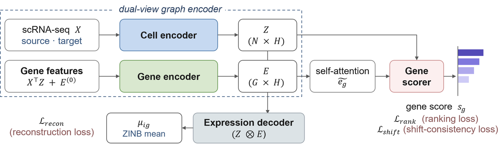
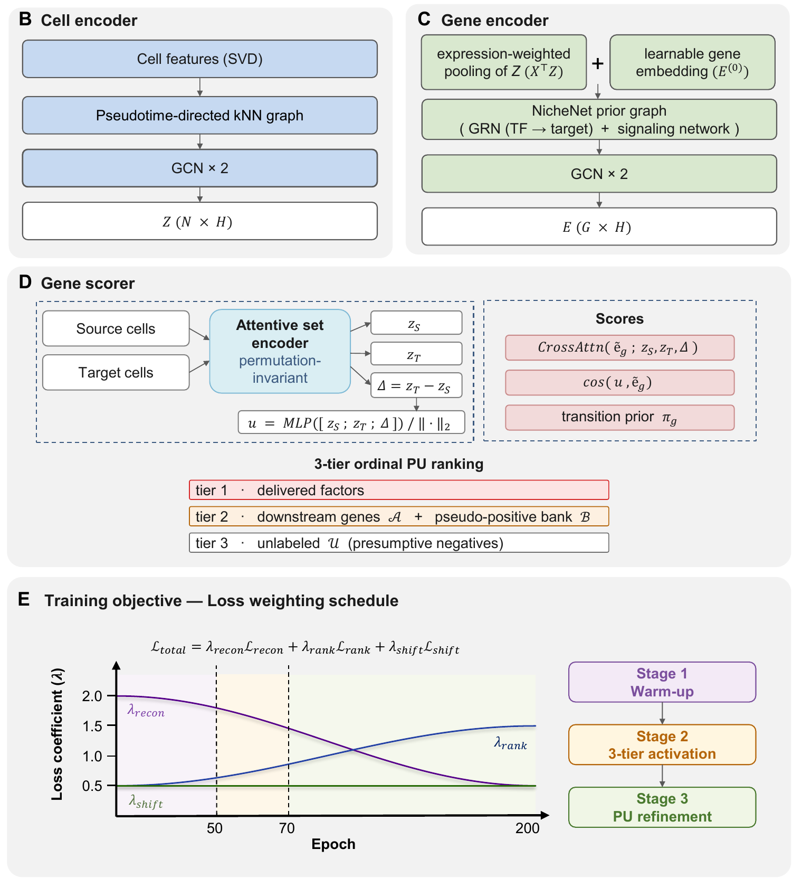

FateDriver: Weakly supervised dual-view graph learning for transition-specific prioritization of candidate regulators in cellular reprogramming
To turn one kind of cell into another, scientists add a few “master switch” genes. But the cell’s own genes do much of the work too, and most of them are still unknown. FateDriver learns from the switches we already know and points to the other genes likely to matter.
- Cellular reprogramming
- Single-cell RNA-seq
- Graph neural network
- Weakly supervised learning

Problem
Reprogramming can turn a skin cell into a stem cell. The recipe adds four genes, yet whether it works depends on the cell’s own genes, and we know only a handful of them.
Two things make this hard. We have only three or four known examples, and every other gene is untested, not proven irrelevant. And the answer changes with the journey: the genes that matter depend on where the cell starts and where it is headed. Existing tools mostly lean on maps of known gene interactions, which favour well-studied genes.
Approach

- One map for cells and genes. Cells and genes are placed in the same space, along the direction of the change.
- Learn from the known switches. The added genes act as “known good” examples. Everything else is ranked as unknown, never as wrong.
- Score for one journey. Each gene is scored for a specific start-to-end transition, not for the end state alone.
Results
It finds what experts already know. Across three datasets, it ranked genes that experts had curated as helpers or barriers of reprogramming at first or second place among six methods.
It isn’t just finding look-alikes. A simpler model picked genes that move together with the known switches, yet recovered fewer of the curated genes.
The answer depends on the journey. Changing the starting cell type or the end state gave largely different lists (only 18 of 100 genes shared in one case). For cells stuck partway, it flagged DDX58, a viral-alarm gene whose immune response was linked to cells failing to switch on stem-cell genes.
It can guess where a cell came from. In mouse intestine, it pointed to transit-amplifying cells as the likely origin of one reprogrammed population and enterocytes for another. Independent measures agreed.
These are predictions to test next, not yet confirmed in the lab.
Citation
@article{sung2026fatedriver,
title = {FateDriver: Weakly supervised dual-view graph learning for
transition-specific prioritization of candidate regulators
in cellular reprogramming},
author = {Sung, Jieun and Son, Kyuwon and Cha, Hyuk-Jin and
Kim, Wankyu and Lee, Haeseung},
note = {Manuscript in preparation. Sung and Son contributed equally},
year = {2026}
}